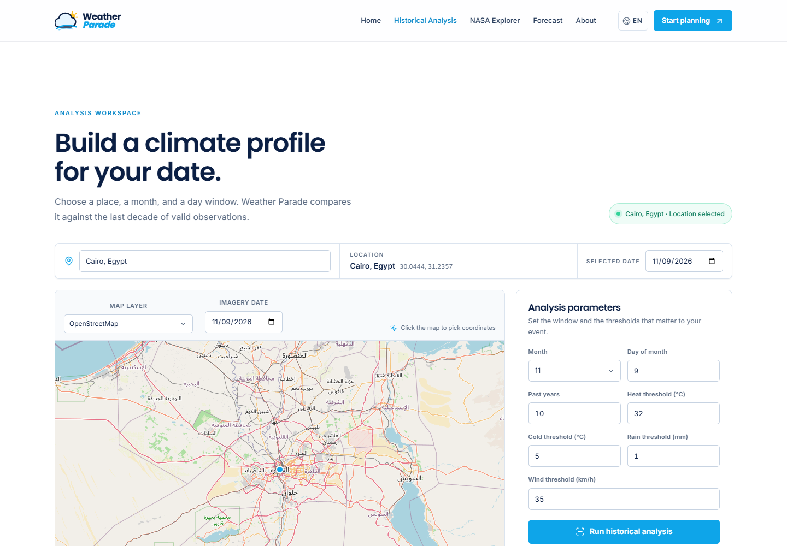
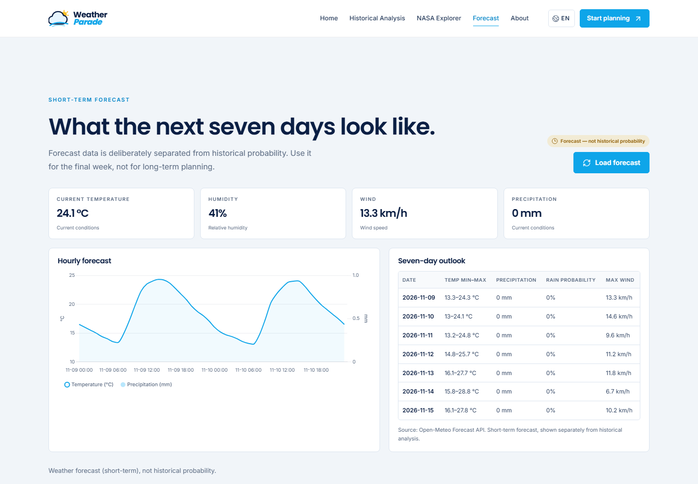
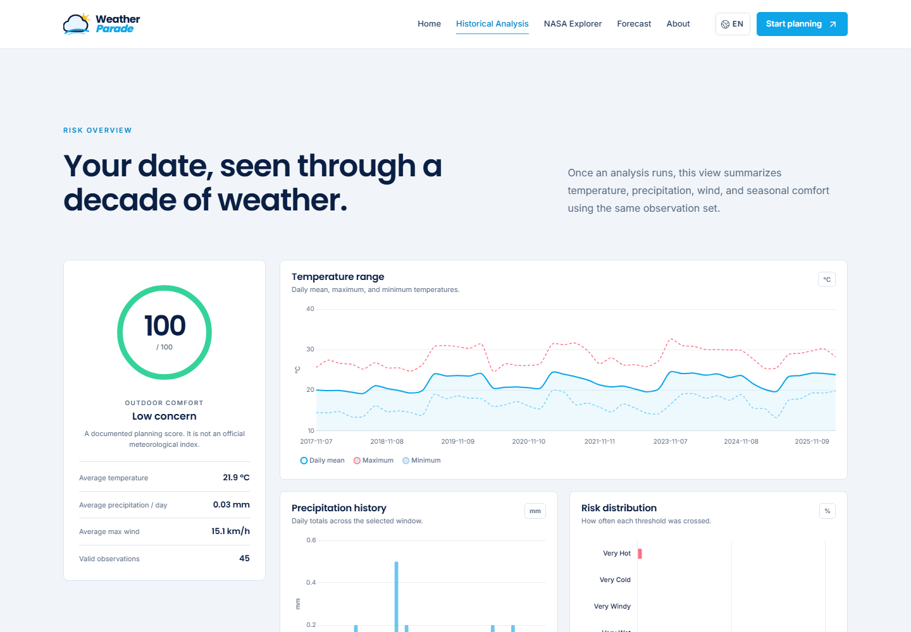
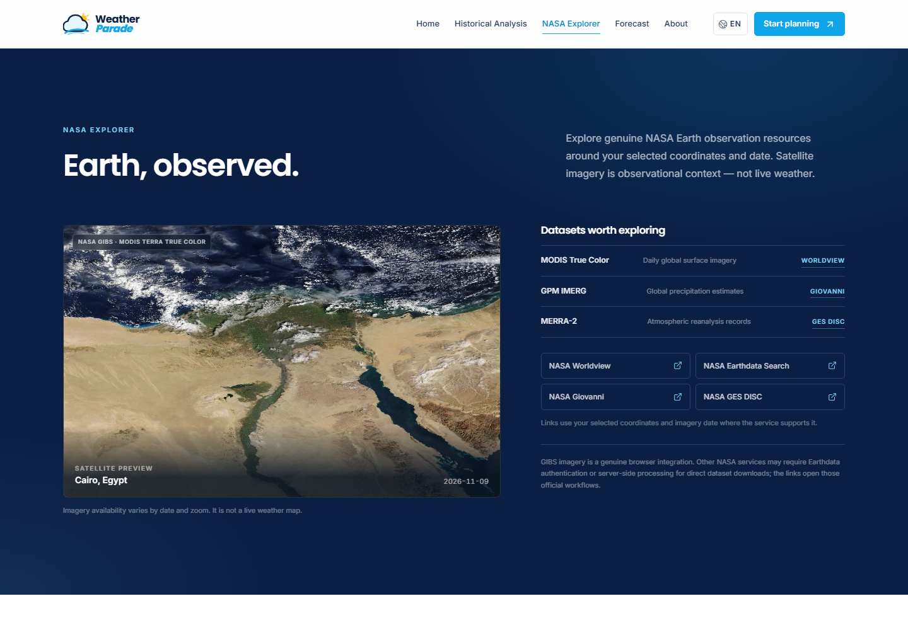
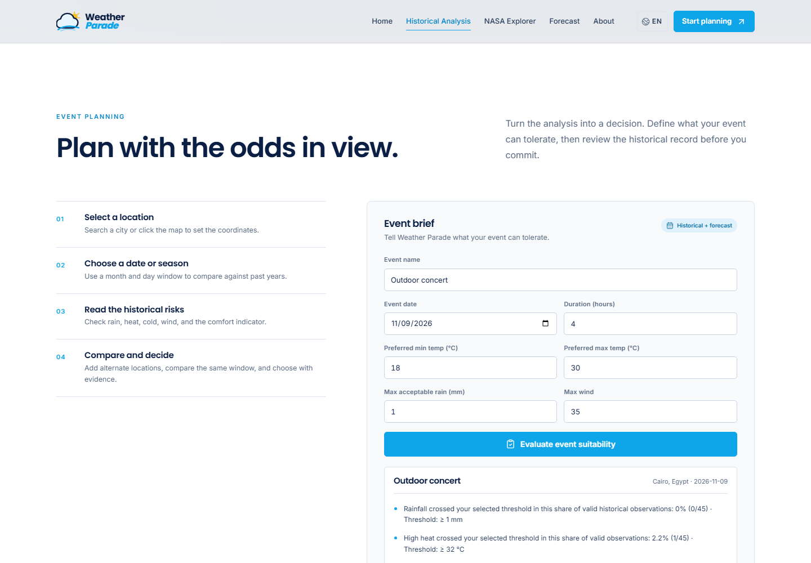
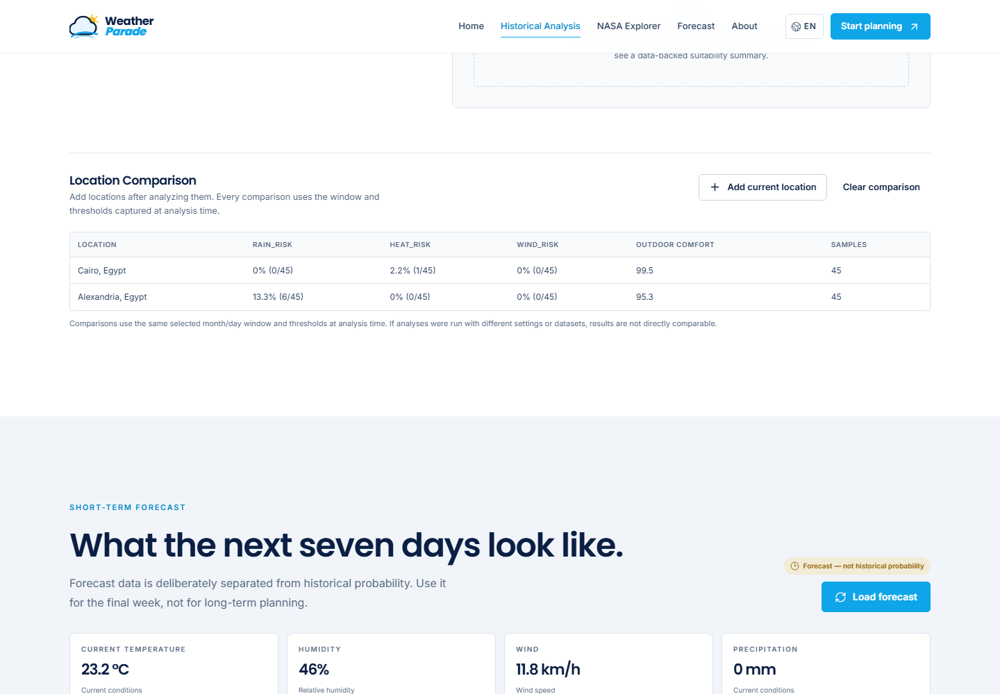
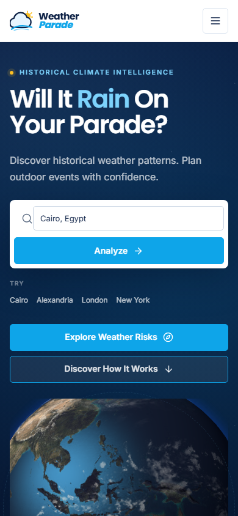
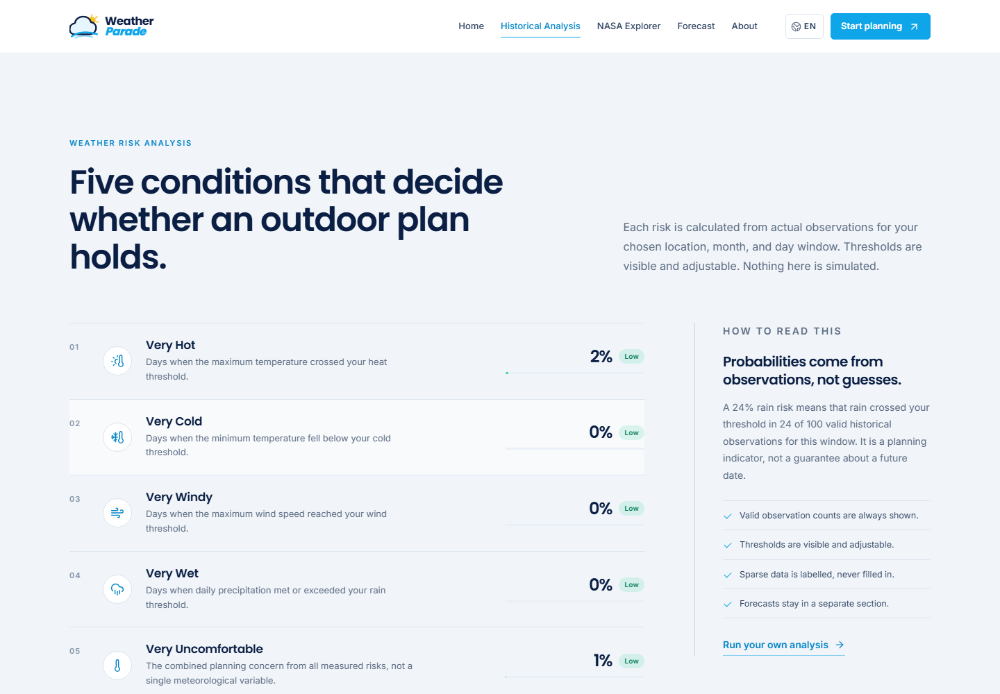

قرار مبكر، معلومة متأخرة
تاريخ الحجز يُثبّت قبل أن يصبح الطقس معروفًا.
NASA SPACE APPS CHALLENGE · EARTH OBSERVATION
Will It Rain On My Parade?
قرارات أفضل للفعاليات الخارجية، مبنية على ما فعله الطقس فعلًا — لا على التخمين.
THE PROBLEM
الفعاليات الخارجية تُحجز قبل أشهر، بينما التوقعات الموثوقة لا تمتد إلى ما بعد أسبوع. الفجوة بين قرار الحجز والمعلومة المتاحة هي المشكلة التي نبني لها أداة.
Historical probabilities تعمل داخل هذه الفجوة: لا تتوقع المستقبل، بل تُظهر كيف تصرّف الطقس سابقًا في نفس النافذة.
تاريخ الحجز يُثبّت قبل أن يصبح الطقس معروفًا.
التوقعات قصيرة الأجل بطبيعتها، ولا تصلح كضمان لتاريخ بعيد.
الحرارة والمطر والرياح والبرودة تتفاعل في تجربة الفعالية.
«لا نستطيع التحكم بالطقس. نستطيع تحسين القرار.»
THE SOLUTION
تجمع Weather Parade بين احتمالات تاريخية محسوبة، وتوقعات قصيرة الأجل منفصلة، وصور Earth observation — في مسار واحد واضح المصادر.
إحداثيات ونافذة زمنية
ملاحظات يومية صالحة
أرقام قابلة للتتبع
مقارنة، تصدير، مشاركة
تكرار تجاوز الحدود داخل ملاحظات ماضية — لا توقعًا مستقبليًا.
حالة الآن، 48 ساعة، و7 أيام — مع فصل واضح عن التاريخ.
صور MODIS Terra للتاريخ والموقع، كسياق بصري لا كطقس حي.
OBJECTIVES
كل هدف منها مرتبط بوظيفة موجودة في التطبيق، وليس بشعار تسويقي. الواجهة تعرض النتيجة، والمصدر، وحدود الثقة.
استبدال الانطباع بأرقام قابلة للتتبع من الأرشيف.
الحرارة، البرودة، الرياح، المطر، وعدم الراحة في مكان واحد.
مقارنة المواقع على نفس النافذة والحدود قبل تثبيت المكان.
المصدر، العينة، والتغطية ظاهرة — ونقص البيانات معلن.
«الشفافية ليست ملحقًا. إنها جزء من النتيجة.»
DATA SOURCES
التكامل الفعلي مفصول بصريًا عن روابط البحث الخارجية. لا ندّعي أن كل خدمة NASA تعمل كـ API مباشر داخل المتصفح.
قيم يومية تاريخية: حرارة عظمى/صغرى/متوسط، هطول، وأقصى رياح.
الحساب الأساسي للاحتمالاتالحالة الحالية، 48 ساعة ساعية، و7 أيام يومية.
توقعات قصيرة، منفصلة عن التاريخMODIS Terra Corrected Reflectance True Color عبر WMTS/WMS.
طبقة خريطة ومعاينة للموقع والتاريخبلاطات الخريطة، البحث الجغرافي، والتحويل العكسي للإحداثيات.
اختيار الموقع والخريطةروابط رسمية لاستكشاف مجموعات البيانات ومسارات البحث.
ليست تكامل API داخل التطبيقLOCATION SEARCH & MAP
ابحث عن مدينة أو انقر على الخريطة. الإحداثيات تبقى مرئية، والطبقة قابلة للتبديل بين OpenStreetMap وصور NASA.

HISTORICAL ANALYSIS
يفتح التحليل أرشيف الطقس اليومي، ثم يحتفظ فقط بالملاحظات الصالحة داخل الشهر والنافذة المختارة — ويترك الباقي خارج الحساب.
قيم يومية من Open-Meteo Archive API: حرارة عظمى/صغرى/متوسط، هطول، وأقصى رياح.
الشهر كامل عند اختيار اليوم 0، أو ±2 يوم حول اليوم المحدد لزيادة العينة.
كل مقياس يُحسب على عدد ملاحظاته الصالحة، لا على عدد الأيام الكلي.
الحرارة 32°C، البرودة 5°C، المطر 1mm، الرياح 35km/h — كلها قابلة للتعديل.
اليوم المحدد في المنتصف، واليومان قبله وبعده داخل الحساب. الأيام خارج النافذة لا تُستخدم.
النطاق الافتراضي 10 سنوات (حتى 30)، بحد أدنى 1940 ومهلة نشر 5 أيام في نهاية الأرشيف.
HISTORICAL PROBABILITIES
كل نسبة في الواجهة قابلة للتفكيك إلى بسط ومقام. لا توجد نسبة بلا عدد أيام تحتها.
الأيام التي تجاوزت الحد المختار (مثل مطر ≥ 1 mm).
الأيام التي تحتوي قيمة رقمية صالحة للمقياس نفسه.
النسبة تصف تكرارًا في الماضي، وليست ضمانًا لتاريخ مستقبلي.
WEATHER RISK ASSESSMENT
كل مخاطرة هي قاعدة بسيطة قابلة للفحص، وليست درجة غامضة. الحدود الافتراضية معروضة، ويمكن تعديلها من واجهة التحليل.
الحرارة العظمى
≥ 32°Cالحرارة الصغرى
≤ 5°Cأقصى سرعة رياح
≥ 35 km/hمجموع الهطول اليومي
≥ 1 mmمشتقة من درجة الراحة، وليست متغيرًا جويًا مستقلًا.
النسبة = عدد الملاحظات الصالحة التي تجاوزت الحد ÷ إجمالي الملاحظات الصالحة × 100. كل بطاقة تعرض العدد والمجموع.
COMFORT SCORE
نبدأ من 100، ونطرح مساهمة كل مخاطرة بوزنها الأقصى. النتيجة مؤشر تخطيطي شفاف، وليست مؤشرًا طقسًا رسميًا.
comfort = 100 − [ min(35, rain×0.35) + min(25, heat×0.25) + min(20, cold×0.20) + min(20, wind×0.20) ]
clamp 0 … 100
هذا score تخطيطي مبني على قواعد، وليس Official Meteorological Index. درجة عدم الراحة المعروضة = 100 − comfort.
SHORT-TERM FORECASTING
Forecast API منفصل تمامًا عن Historical Analysis. يُستخدم للتحقق النهائي قبل الفعالية، لا للادعاء بمعرفة الطقس بعد أشهر.

عند تقييم فعالية خارج نطاق التوقع، تُظهر الواجهة ملاحظة صريحة بدلًا من تخمين نتيجة.
CHARTS & VISUALIZATION
خمسة أنواع من الرسوم، كل واحد منها يقرأ مجموعة البيانات نفسها التي بُنيت منها البطاقات — بلا أرقام منفصلة أو نتائج موازية.
متوسط، عظمى، وصغرى على خط زمني.
أعمدة يومية، وتمييز لوني عند تجاوز الحد.
أشرطة أفقية لنسب المخاطر الخمس.
12 شهرًا، بألوان عتبات الراحة.
حرارة وهطول على محورين، 48 ساعة.
Chart.js 4.4.4 · Empty state عند غياب البيانات

NASA EXPLORER
صورة MODIS Terra True Color للتاريخ والموقع المحددين، مدمجة في الخريطة ومعاينة NASA Explorer — لا صورة ثابتة ولا بيانات مصطنعة.

WMS preview + WMTS layer في Leaflet، بتاريخ صورة قابل للتغيير.
الصور سياق بصري وليست طقسًا حيًا. التوفر يختلف حسب التاريخ والطبقة، وبعض خدمات NASA تتطلب Earthdata login أو معالجة خادم.
EVENT PLANNING
عرّف الفعالية وحدودك المقبولة، ثم اقرأ ما يقوله السجل التاريخي — مع فصل واضح للتوقع قصير المدى إن كان التاريخ داخل نطاقه.
الاسم، التاريخ، والمدة.
أدنى/أعلى حرارة، أقصى مطر، وأقصى رياح.
كل سطر يعرض النسبة والعدد والحد المستخدم.
ملاحظة forecast منفصلة إذا كان التاريخ داخل النطاق.

النتيجة ليست توصية مخترعة: كل سطر مرتبط بقيمة محسوبة من التحليل، ونسبة forecast تُعرض فقط عندما يكون التاريخ داخل نطاق التوقع.
LOCATION COMPARISON
أضف المواقع بعد تحليلها، لتقارن المطر والحرارة والرياح ودرجة الراحة وعدد العينات — على نفس النافذة والحدود وقت التحليل.

إذا اختلفت النوافذ أو الحدود أو مصادر البيانات بين التحليلين، تُعرض الملاحظة بوضوح: النتائج ليست قابلة للمقارنة المباشرة.
EXPORT & SHARING
أربع طرق مختلفة للخروج بالنتيجة: بيانات خام، حالة كاملة، تقرير للطباعة، أو رابط يفتح نفس الإعدادات.
المقاييس المحسوبة + حتى 500 ملاحظة من العينة المستخدمة.
.csv · text/csvالحالة الكاملة: الموقع، التاريخ، النتائج، المصدر، والبيانات الوصفية.
.json · full stateتقرير نظيف عبر طباعة المتصفح أو Save as PDF.
window.print()الموقع، التاريخ، والنافذة والحدود فقط. لا بيانات شخصية.
URL parametersكل تصدير يحمل مصدر البيانات وحدودها؛ الرابط لا يحمل أسرارًا، ويعيد بناء التحليل من الإعدادات العامة.
BILINGUAL & RESPONSIVE
الاتجاه يتغيّر، والمصطلحات التقنية تبقى واضحة. الواجهة تعمل من سطح المكتب إلى الهاتف دون أن تفقد ترتيبها.
درجة الراحة · تقييم المخاطر · تنبؤ قصير المدى
CairoComfort Score · Weather Risk Assessment · Short-Term Forecast
Inter / Poppinsنقاط توقف مصممة، لا تصغير تلقائي. الشريط، البطاقات، والجداول تعيد ترتيب نفسها.

اللغة المفضلة تُحفظ محليًا في المتصفح، والاتجاه RTL/LTR يُطبّق على الواجهة كاملة — لا على النصوص وحدها.
RELIABILITY & DATA HANDLING
الحالة الفارغة ليست عيبًا في التصميم. إنها نتيجة صادقة عندما لا تكفي الملاحظات لتكوين حكم موثوق.
حالة تحميل أثناء جلب الأرشيف أو التوقع، بلا أرقام مؤقتة.
النتيجة تُعرض مع عدد الملاحظات الصالحة والتغطية والمصدر.
فشل API يُعرض كخطأ، لا كقيمة صفر مضللة.
أقل من 10 ملاحظات صالحة → Insufficient Data بدلًا من احتمال وهمي.
TECHNOLOGY STACK
لا Framework جديد لمجرد التفضيل. الموقع مبني على ES Modules أصلية، مع مكتبات فقط حيث تضيف قيمة واضحة.
بنية دلالية، Grid/Flex، وResponsive مقصود.
ES Modules أصلية، بلا React / Next / Vue / Angular.
خريطة تفاعلية، علامة قابلة للسحب، وطبقة NASA.
خمسة أنواع من الرسوم، مع Empty states.
كرة أرضية محلية في Hero، بلا اعتماد على CDN للنسيج.
أيقونات متسقة، بلا Emoji في الواجهة.
خادم ثابت اختياري لخدمة public/.
API حقيقية، مع فصل واضح للمصادر.
USER JOURNEY · REAL UI
من بحث عن مدينة إلى قرار موثّق. كل لقطة أدناه من التطبيق الحقيقي، وليست Mockup أو نتيجة مُختلقة.

كل هذه النتائج قابلة لإعادة الإنتاج من داخل التطبيق. افتح Weather Parade
LIMITATIONS & SCIENTIFIC ACCURACY
الدقة العلمية تبدأ بمعرفة حدود الأداة. هذه ليست قائمة تحذيرات شكلية؛ إنها شروط لقراءة النتائج بشكل صحيح.
«لا نعرف طقس يومك القادم بعد أشهر. نعرف كيف تصرّف الطقس سابقًا — وهذا ما نعرضه.»
WEATHER PARADE · NASA SPACE APPS CHALLENGE
Weather Parade — Will It Rain On My Parade?
تحليل تاريخي شفاف، توقعات قصيرة منفصلة، وصور Earth observation حقيقية — لاتخاذ قرار خارجي أقل ارتباكًا.
KEYBOARD SHORTCUTS
على الهاتف: اسحب أفقيًا للتنقل. الأزرار الدائرية أسفل الشاشة تعمل دائمًا.